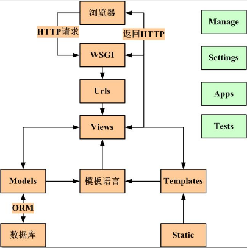
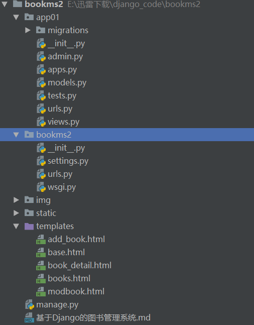

Django——图书管理系统
终将感谢这些努力的日子
正文
基于Django的图书管理系统
1.主体功能
1.列出图书列表、出版社列表、作者列表
2.点击作者，会列出其出版的图书列表
3.点击出版社，会列出旗下图书列表
4.可以创建、修改、删除 图书、作者、出版社2.界面展示
图书馆首页：

添加书籍页面：

其他页面与上述两页类似，不做赘述。
3.项目详情
3.1 Django的简介
Django是一个由Python编写的具有完整架站能力的开源Web框架。使用Django，只要很少的代码，Python的程序开发人员就可以轻松地完成一个正式网站所需要的大部分内容，并进一步开发出全功能的Web服务。
Django基于原始的MVC模型（Model+View+Controller），并在此基础上做出了修改，将视图分为View模块和Template模块两个部分，使动态的逻辑处理与静态的页面展现分离开来。此外，Django的Model采用了ORM技术，将关系型数据库中的表封装为面向对象的PYTHON类，将类作为底层表的接口，避免了原始复杂的SQL语句的编写。MTV和MVC在本质上是一样的。如下图：

Django的优点：
- 功能完善、要素齐全：该有的、可以没有的都有，常用的、不常用的工具都用。Django提供了大量的特性和工具，无须你自己定义、组合、增删及修改。但是，在有些人眼里这被认为是‘臃肿’不够灵活，发挥不了程序员的主动能力。（一体机和DIY你更喜欢哪个？^-^）
- 完善的文档：经过十多年的发展和完善，Django有广泛的实践经验和完善的在线文档（可惜大多数为英文）。开发者遇到问题时可以搜索在线文档寻求解决方案。
- 强大的数据库访问组件：Django的Model层自带数据库ORM组件，使得开发者无须学习其他数据库访问技术（SQL、pymysql、SQLALchemy等）。当然你也可以不用Django自带的ORM，而是使用其它访问技术，比如SQLALchemy。
- 灵活的URL映射：Django使用正则表达式管理URL映射，灵活性高。
- 丰富的Template模板语言：类似jinjia模板语言，不但原生功能丰富，还可以自定义模板标签。
- 自带免费的后台管理系统：只需要通过简单的几行配置和代码就可以实现一个完整的后台数据管理控制平台。
- 完整的错误信息提示：在开发调试过程中如果出现运行错误或者异常，Django可以提供非常完整的错误信息帮助定位问题。
3.2项目目录
本图书管理系统的源码目录结构如下：



昵称：
退出
[Ctrl+Enter快捷键提交]
· 中产焦虑，不在于无法改变世界，而是拿什么改变自己的小世界？
· 用户账户注销难，饿了么、家乐福电商等20家网企被要求整改
· 格力集团3180套人才公寓开建在即，3年后拎包入住
· 谷歌无人驾驶或已在沪成立独资公司
· 多个丑闻发生后 FB旗下产品有1/3用户“使用时间”缩水
» 更多新闻...
· 被踢出去的用户
· 成为一个有目标的学习者
· 历史转折中的“杭派工程师”
· 如何提高代码质量？